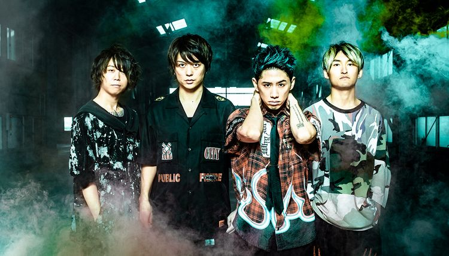

One Ok Rock

밴드명 원 오크 록
ONE OK ROCK
ワンオクロック
(위 사진 좌 → 우)
토모야(Tomoya) → 토루(Toru) → 타카(Taka) → 료타(Ryota)
결성 - 2005년
소속사 - 아뮤즈
레이블 - A-Sketch(일본)
Fueled By Ramen(미국)
활동지점 - 일본
도쿄 도
장르 - 록, 팝 록, 파워 팝, 포스트 하드코어, 얼터너티브 록, 팝 펑크, 이모
-The Beginning-